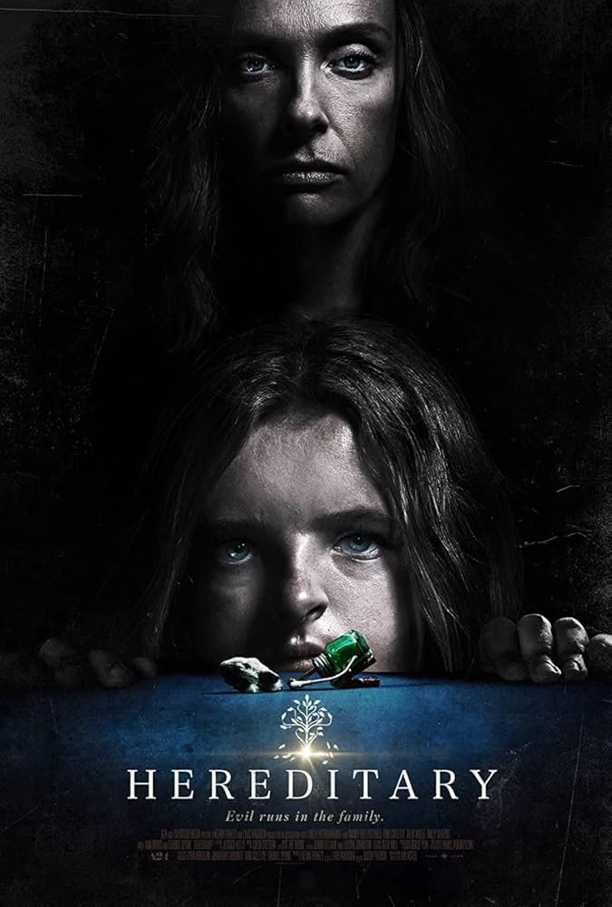

Dir. Yorgos Lanthimos

Incredible story. Incredibly funny. Incredible set-design. Incredible performances. Script is brilliant. 10/10
Dir. Lars von Trier

Beautifully dark yet life-affirming film with great performances. Stunning imagery.
Dir. Agnès Varda
Varda's masterpiece. Simply amazing.
Dir. Ari Aster
Horror at its best. The family drama is the horror, everything else is just incredible atmosphere and film-making.
Dir. Thomas Vinterberg
Birth of Dogma 95. Artistic and incredibly written. Dark and very Scandinavian. A classic for sure.